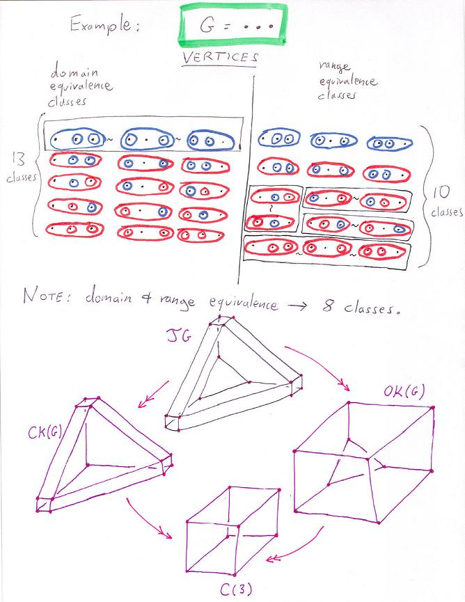
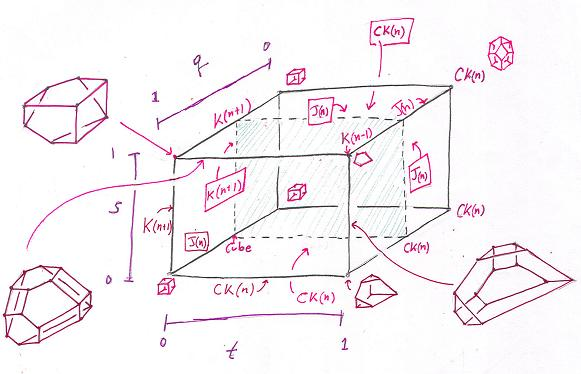

Graph Multiplihedra -- a tentative beginning.
An algorithm for convex hulls of graph multilihedra.
Some 3-d examples of graph multiplihedra.
The 4-d multicyclohedron.
Graph composihedra and opposihedra/cubohedra: quotients of the multiplihedra.
Realizing quotients of the multiplihedra.
The full poset structure of painted tubes.
Appendix: vertices of the multicyclohedron.
Back to research page.
Here are some notes about graph multiplihedra. The two key sources are S. Devadoss's two papers on graph associahedra, and S.Forcey's paper on multiplihedra. In fact, the following notes assume that you have first read and enjoyed the excellent short paper by Devadoss here.
Note that the tubing above is missing its outermost colored tube. Exercise: what color must that outer tube be?
Here is a Schlegel diagram for the graph multiplihedra of the cycle of four vertices. The polytope has 104 vertices and 28 facets. Is it simple?

Note that the cubohedra/opposihedra for the usual associahedra K(n) is K(n+1). Is the final target always an n-dimensional cube, for n the number of graph nodes? This question might be equivalent to the question of the veracity of the following equation: v(OK(G))-v(J(G))+v(CK(G))=2^n, where v(X) gives the number of vertices.
The following notes are about realizing the above quotient polytopes as convex hulls.Above we see a square for q in (0,1), allowing s and t to range over [0,1]. (s stands for source and t for target. Note that s=0 corresponds to an associative source and t = 0 to an associative target. Two pages below we see the full picture, also allowing q to range over [0,1]. New polytopes are introduced! But first here is the calculation of points for all three parameters exactly one half.

Here is the drawing of actual points calculated for q=1, and various values of s and t. All the five important polytopes appear: associahedron, cubohedron (here K(n+1)), composihedron, multiplihedron, and cube. There are also four new polytopes, which are the top and bottom halves of the cube and the multiplihedron when the associahedron is seen as a cross section of the cube (respectively the multiplihedron). Does this also happen for higher dimensions?
Also note that the only rule is as follows: If a tube x contains any red at all then x itself must be red.
Here are the vertices of the above "multicyclohedron" to be entered into the
web demo of polymake in order to see a rotatable version.
POINTS
1 1 7 1 4
1 1 4 1 7
1 7 1 4 1
1 4 1 7 1
1 3 7 1 2
1 7 1 2 3
1 1 2 3 7
1 2 3 7 1
1 3 2 1 7
1 2 1 7 3
1 1 7 3 2
1 7 3 2 1
1 7 3 1 2
1 3 1 2 7
1 1 2 7 3
1 2 7 3 1
1 7 2 1 3
1 2 1 3 7
1 1 3 7 2
1 3 7 2 1
1 1/2 7 1 4
1 1/2 4 1 7
1 7 1/2 4 1
1 4 1/2 7 1
1 3 7 1/2 2
1 7 1/2 2 3
1 1/2 2 3 7
1 2 3 7 1/2
1 3 2 1/2 7
1 2 1/2 7 3
1 1/2 7 3 2
1 7 3 2 1/2
1 7 3 1/2 2
1 3 1/2 2 7
1 1/2 2 7 3
1 2 7 3 1/2
1 7 2 1/2 3
1 2 1/2 3 7
1 1/2 3 7 2
1 3 7 2 1/2
1 1 7 1/2 4
1 1 4 1/2 7
1 7 1 4 1/2
1 4 1 7 1/2
1 3 7 1/2 2/2
1 7 1/2 2/2 3
1 1/2 2/2 3 7
1 2/2 3 7 1/2
1 3 2/2 1/2 7
1 2/2 1/2 7 3
1 1/2 7 3 2/2
1 7 3 2/2 1/2
1 7 3 1/2 2/2
1 3 1/2 2/2 7
1 1/2 2/2 7 3
1 2/2 7 3 1/2
1 7 2/2 1/2 3
1 2/2 1/2 3 7
1 1/2 3 7 2/2
1 3 7 2/2 1/2
1 1/2 7 1/2 4
1 1/2 4 1/2 7
1 7 1/2 4 1/2
1 4 1/2 7 1/2
1 3/2 7 1/2 2/2
1 7 1/2 2/2 3/2
1 1/2 2/2 3/2 7
1 2/2 3/2 7 1/2
1 3/2 2/2 1/2 7
1 2/2 1/2 7 3/2
1 1/2 7 3/2 2/2
1 7 3/2 2/2 1/2
1 7 3/2 1/2 2/2
1 3/2 1/2 2/2 7
1 1/2 2/2 7 3/2
1 2/2 7 3/2 1/2
1 7 2/2 1/2 3/2
1 2/2 1/2 3/2 7
1 1/2 3/2 7 2/2
1 3/2 7 2/2 1/2
1 1/2 7 1/2 4/2
1 1/2 4/2 1/2 7
1 7 1/2 4/2 1/2
1 4/2 1/2 7 1/2
1 3/2 7/2 1/2 2/2
1 7/2 1/2 2/2 3/2
1 1/2 2/2 3/2 7/2
1 2/2 3/2 7/2 1/2
1 3/2 2/2 1/2 7/2
1 2/2 1/2 7/2 3/2
1 1/2 7/2 3/2 2/2
1 7/2 3/2 2/2 1/2
1 7/2 3/2 1/2 2/2
1 3/2 1/2 2/2 7/2
1 1/2 2/2 7/2 3/2
1 2/2 7/2 3/2 1/2
1 7/2 2/2 1/2 3/2
1 2/2 1/2 3/2 7/2
1 1/2 3/2 7/2 2/2
1 3/2 7/2 2/2 1/2
1 1/2 7/2 1/2 4/2
1 1/2 4/2 1/2 7/2
1 7/2 1/2 4/2 1/2
1 4/2 1/2 7/2 1/2
Back to research page.
Revision Date: